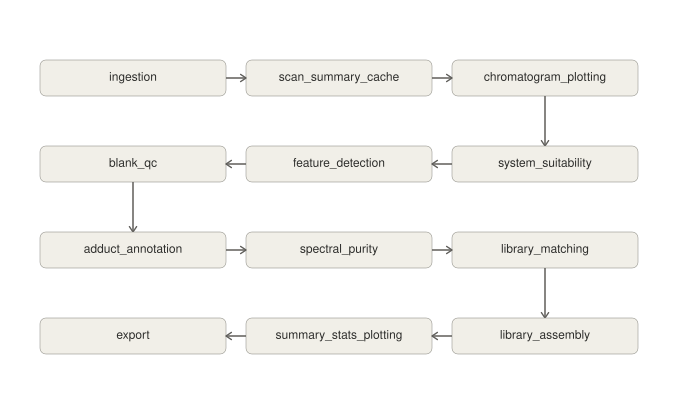
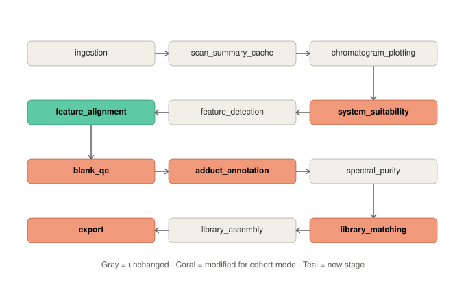

Workflow
Standards-only complete · tested
A straight, sequential run against single-standard data — no cross-sample alignment needed. Validates known reference compounds.

Cohort-with-QC validated on real data
Reworked stage-by-stage for real biological cohort data with no known-compound assumptions, then four additional statistics/ verification stages. Validated against MTBLS1301 (DKFZ, negative-mode HILIC, 12 samples: 3 pooled QC + 3 cell lines × 3 replicates).

Stage order: ingestion → scan_summary_cache →
chromatogram_plotting → system_suitability (ordering gate only,
see Stages) →
feature_detection → feature_alignment → blank_qc →
adduct_annotation → library_matching → library_assembly →
summary_stats_plotting → volcano_plot → heatmap_clustering →
plsda → xic_plotting → export.
Full detail on every stage: Stages.
export is positioned last — see
Export as final aggregator below for why
that wasn't the case earlier in development.
Software Architecture
The Stage pattern
Every pipeline step is a class with the same contract:
validate_input(context), execute(context) ->
context, validate_output(context). Cohort-mode
stages that need materially different logic from their
standards-only counterpart get a sibling class
(CohortAdductAnnotationStage,
CohortLibraryMatchingStage,
CohortLibraryAssemblyStage,
CohortExportStage) rather than branching inside one
class — the old standards-only classes are left untouched.
Every tunable value (RT/mz tolerances, correlation threshold,
confidence tiers, RSD threshold, PCA presence fraction) is a
constructor parameter; nothing is hardcoded inside a stage.
Context & DB refactor
LCMSContext.mzml_file_paths originally globbed a raw
data directory directly — silently cross-contaminating between
studies, and missing .mzXML files entirely. Replaced
with a DB-driven lookup: Sample.raw_file_path is stored
explicitly per sample, LCMSContext takes a required
experiment_id: int, and run_pipeline_for_study
resolves the human-readable study_id slug to that
integer PK via get_experiment_pk_sync() (mirroring the
async version the FastAPI ingest route uses).
Checkpoint / log architecture split
Checkpointing (cache-hit comparison) and human-readable logging were
originally conflated, so stages without a cache_key()
(like ingestion, deliberately never cached) got no
persisted log at all. Fixed with an always-runs
save_stage_log() call, independent of caching, invoked
on both fresh execution and cache-hit paths.
Design Decisions
rt_tolerance_sec=15 and correlation_threshold=0.75
both came from real histograms of the data (RT-drift between QC
mass-matched pairs; the correlation distribution across candidate
adduct pairs) — not standards-only defaults, and not picked to
maximize a metric with no ceiling. align_features's own
consolidation-% sweep was explicitly rejected as a tuning method: it
climbs indefinitely with looser tolerance since there's no
correlation gate, making it a trap for picking an artificially loose
threshold.
[2M-H]- dimers are excluded from primary-ion candidacy in
annotate_adducts — never the reference point for
neutral-mass back-calculation, even when they're the most intense
ion in the group.
export originally ran immediately after
library_assembly, purely to serialize
context.final_feature_table to disk
(feature_table.json/csv). The four downstream
statistics/verification stages were incorrectly gated on
export having run, when they only actually depend on
library_assembly (which sets
final_feature_table — export just serializes it).
That coupling blocked repositioning export as a true
final aggregator that also gathers every stage's qc_metrics
into one report. Fixed by re-gating those four stages on
library_assembly instead, freeing export to
move to the true end of the pipeline.
volcano_plot's statistically significant features, not
the full set of high-confidence library matches. An XIC's job here
is verifying a specific biological claim (this feature
differs between groups) — that only applies to features you're
about to make a claim about. Each plot is labeled with the matched
compound_name when the feature happens to have a
library ID, or by m/z & RT when it doesn't.
volcano_<comparison>.csv,
heatmap_z_matrix.csv, plsda_vip_scores.csv,
per-feature xic_<feature>.csv traces). Lets the
data be inspected or reused from a simple standalone script instead
of rerunning a stage or editing plotting code.